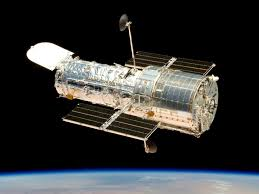

Hubble Space Telescope
Since its 1990 launch, the Hubble Space Telescope has changed our fundamental understanding of the universe.
Throughout the history of science, revolutionary instruments propel our understanding with their landmark discoveries. The Hubble Space Telescope is a testament to that concept. Its design, technology and serviceability have made it one of NASA's most transformative observatories. From determining the atmospheric composition of planets around other stars to discovering dark energy, Hubble has changed humanity's understanding of the universe